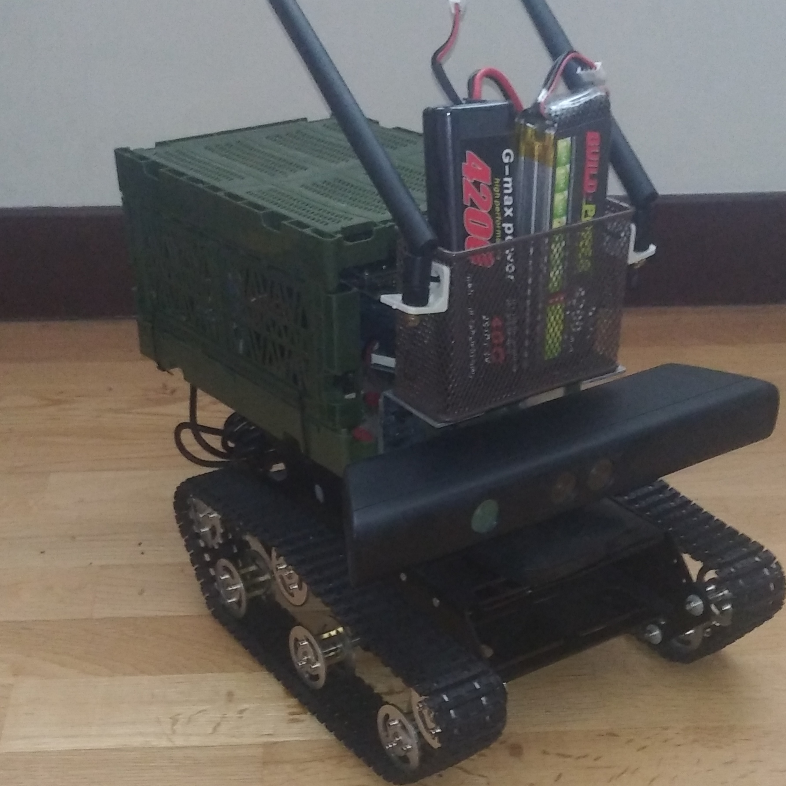

Tank Drive Robot

This is a tank drive system robot. It runs on a single board computer(Nvidia jetson nano interchangeably raspberry pi as well), and has various sensors to aid its naviagtion. It can also be driven remotley using a wireless joystick on the client nodes.
It runs RTABmap Slam (Vision based slam) for mapping navigtion within environments. Sensors such as the kinect camera, imu sensors aid in locatization whithin the map.